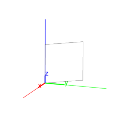
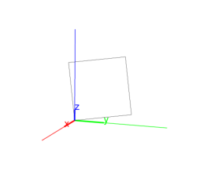

13.8.2 Rhombuses in space: rhombus
See section 12.9.2 for rhombuses in the plane.
The rhombus command returns and draws a rhombus.
It takes as arguments one of the following:
-
Three points, A, B and P.
The first two points A and B are vertices of the
triangle, the third point P determines the plane and
orientation of the rhombus. The orientation is so that angle
BAP is positive. The command returns and draws rhombus
ABCD, where D is on the ray AP (and the
length of AD equals the length of AB).
Input:
A := point(0,0,0); B := point(3,3,3);
P := point(0,0,3)
then:
rhombus(A,B,P)
Output:

- Two points, A and B, and a list consisting
of a point P and a real number a.
The points A and B are vertices of the rhombus
and P determines the plane and orientation of the rhombus
as above. The command returns and draws rhombus ABCD,
where angle BAD equals a.
Input:
rhombus(A,B,[P,pi/3])
Output:

rhombus can take optional fourth and fifth
arguments, which are variable names assigned to vertices
C and D.
Input:
rhombus(A,B,[P,pi/3],C,D)
then:
simplify(coordinates(C)); simplify(coordinates(D))
Output:
[(-3*sqrt(6)+18)/4,(-3*sqrt(6)+18)/4,(3*sqrt(6)+9)/2],
[(-3*sqrt(6)+6)/4,(-3*sqrt(6)+6)/4,(3*sqrt(6)+3)/2]